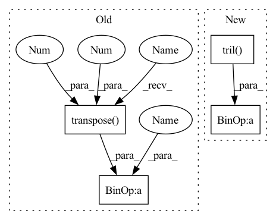

Pattern ID :8669

Before Change
w = self.sinkhorn(w)
x_u = torch.diagonal(w, dim1=1, dim2=2)
w = torch.triu(w, diagonal=1)
x_p = w + w.transpose(1, 2)
return x_p, x_u
After Change
x_p = torch.clamp(x_p, min=self.eps) // for numerical stability
x_u = torch.clamp(x_u, min=self.eps)
x_p = (x_p + x_p.transpose(1, 2)) / 2
w = torch.triu(x_p, diagonal=1) + torch.tril(x_p, diagonal=1)
w = w + torch.diag_embed(x_u)
w = self.sinkhorn(w)
x_u = torch.diagonal(w, dim1=1, dim2=2)
x_p = torch.triu(w, diagonal=1) + torch.tril(w, diagonal=1)
return x_p, x_u
In pattern: SUPERPATTERN
Frequency: 3
Non-data size: 4
Instances
Fragment ID: 30072750
Project Name: mxfold/mxfold2
Commit Name: 6168384777b8087f0c93489d72fc91b9a5233afa
Time: 2019-12-01
Author: satoken@bio.keio.ac.jp
File Name: dnnfold/fold/layers.py
M Class Name: Sinkhorn
N Class Name: Sinkhorn
M Method Name: forward(3)
N Method Name: forward(3)
M Parent Class: nn.Module
N Parent Class: nn.Module
M File Name: dnnfold/fold/layers.py
N File Name: dnnfold/fold/layers.py
M Start Line: 219
M End Line: 229
N Start Line: 211
N End Line: 218
'>
Before Change
w = w + torch.diag_embed(x_u)
w = self.sinkhorn(w)
x_u = torch.diagonal(w, dim1=1, dim2=2)
w = torch.triu(w, diagonal=1)
x_p = w + w.transpose(1, 2)
return x_p, x_u
After Change
x_p = torch.clamp(x_p, min=self.eps) // for numerical stability
x_u = torch.clamp(x_u, min=self.eps)
x_p = (x_p + x_p.transpose(1, 2)) / 2
w = torch.triu(x_p, diagonal=1) + torch.tril(x_p, diagonal=1)
w = w + torch.diag_embed(x_u)
w = self.sinkhorn(w)
x_u = torch.diagonal(w, dim1=1, dim2=2)
x_p = torch.triu(w, diagonal=1) + torch.tril(w, diagonal=1)
'>
Fragment ID: 30072760
Project Name: keio-bioinformatics/mxfold2
Commit Name: 6168384777b8087f0c93489d72fc91b9a5233afa
Time: 2019-12-01
Author: satoken@bio.keio.ac.jp
File Name: dnnfold/fold/layers.py
M Class Name: Sinkhorn
N Class Name: Sinkhorn
M Method Name: forward(3)
N Method Name: forward(3)
M Parent Class: nn.Module
N Parent Class: nn.Module
M File Name: dnnfold/fold/layers.py
N File Name: dnnfold/fold/layers.py
M Start Line: 219
M End Line: 229
N Start Line: 211
N End Line: 218
'>
Before Change
def forward(self, X):
if self.lower:
X = X.tril(-1)
else:
X = X.triu(1)
return X + X.transpose(-2, -1)
def extra_repr(self):
return "n={}".format(self.n)
After Change
def forward(self, X):
if self.lower:
return X.tril(0) + X.tril(-1).transpose(-2, -1)
else:
return X.triu(0) + X.triu(1).transpose(-2, -1)
'>
Fragment ID: 30072751
Project Name: lezcano/geotorch
Commit Name: a49e6879b2aeb2bc69fe24e5154409a974ae6edf
Time: 2020-06-09
Author: lezcano-93@hotmail.com
File Name: geotorch/sym.py
M Class Name: Sym
N Class Name: Sym
M Method Name: forward(2)
N Method Name: forward(2)
M Parent Class: AbstractManifold
N Parent Class: AbstractManifold
M File Name: geotorch/sym.py
N File Name: geotorch/sym.py
M Start Line: 27
M End Line: 30
N Start Line: 27
N End Line: 29